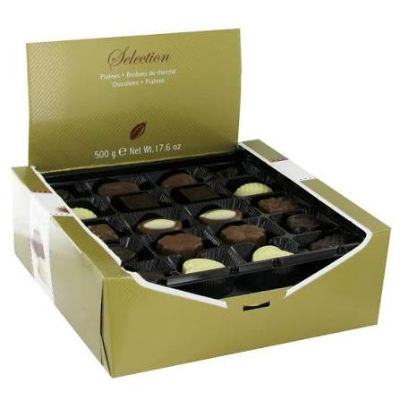

Dégustation
Cave à vin premium
Trois grands crus, douze verres en cristal sans plomb et l'outillage de sommelier complet.
Voir la ficheTrois grands crus, des verres en cristal, et de quoi faire enfin la différence entre un vin et un autre.
Trois grands crus, douze verres en cristal sans plomb et l'outillage de sommelier complet.
Voir la fiche
Quarante-huit pièces tempérées à la main. Noir, lait, noisette, en boîte isotherme.
Voir la ficheLe cadeau de dégustation a un avantage rare : il fait participer. On ne reçoit pas un objet que l'on regarde, on reçoit un objet avec lequel on fait quelque chose. Le geste compte autant que la pièce.
La verrerie est le premier critère, et le plus souvent négligé. Un verre en cristal sans plomb n'est pas un objet décoratif : il est plus fin, il conduit différemment la lumière, et il révèle les arômes. Un verre épais et lourd masque le vin. C'est l'accessoire qui change le plus la perception, à qualité de vin égale.
La conservation est le second point, et il est décisif. Un grand cru ne se sert pas à température ambiante, et surtout pas le lendemain : ouvert, il se referme en quelques heures. Servi trop chaud, il perd exactement ce qui fait sa qualité. Le cadeau n'a de sens que s'il est bu dans les bonnes conditions.
Le chocolat complète l'ensemble, mais à une condition : il faut choisir des fèves de dégustation, et non du chocolat de dessert. Un chocolat de dégustation à soixante-dix pour cent se distingue immédiatement d'un chocolat de cuisine, et la différence de goût est bien plus large que l'écart de prix.
Questions
Le cristal sans plomb est plus fin qu'un verre classique. Il laisse passer plus de lumière, ce qui révèle la couleur du vin, et sa finesse permet de mieux distinguer les arômes. Un verre épais masque le vin : on goûte moins bien avec un verre lourd.
Un rouge corsé avec les viandes, un blanc sec avec les crustacés et le fromage, un liquoreux en fin de repas. Le point de vigilance est la température : un rouge trop chaud perd ses arômes, un blanc trop glacé les fige. Le réflexe est de sortir les bouteilles dix minutes avant.
Trois bouteilles bien choisies valent mieux qu'un caveau entier. Un cadeau de dégustation doit rester buvable sur une soirée. Le caveau se conserve et se boit lentement, mais il demande de la place, et c'est souvent ce qui empêche de l'offrir.
Continuer

Un écrin, un champagne, des chocolats : le cadeau se donne tel quel, sans songer à l'emballer.
Découvrir
L'objet que l'on garde. Des montres qui se portent au quotidien plutôt que de prendre la poussière dans leur écrin.
Découvrir
Cuir pleine fleur tanné végétal : une pièce qui se patine au fil des années au lieu de s'user.
Découvrir